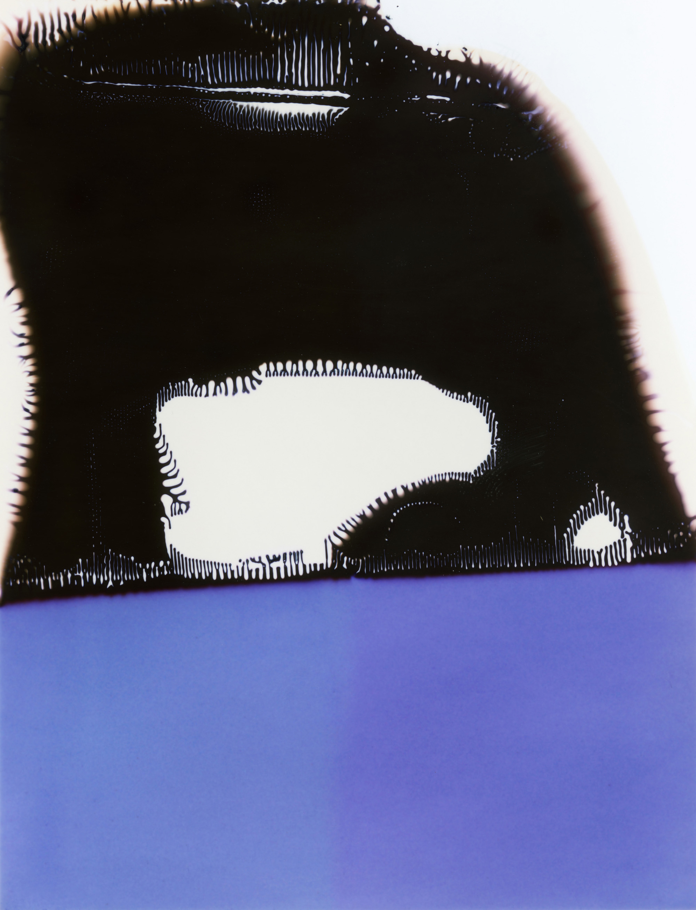
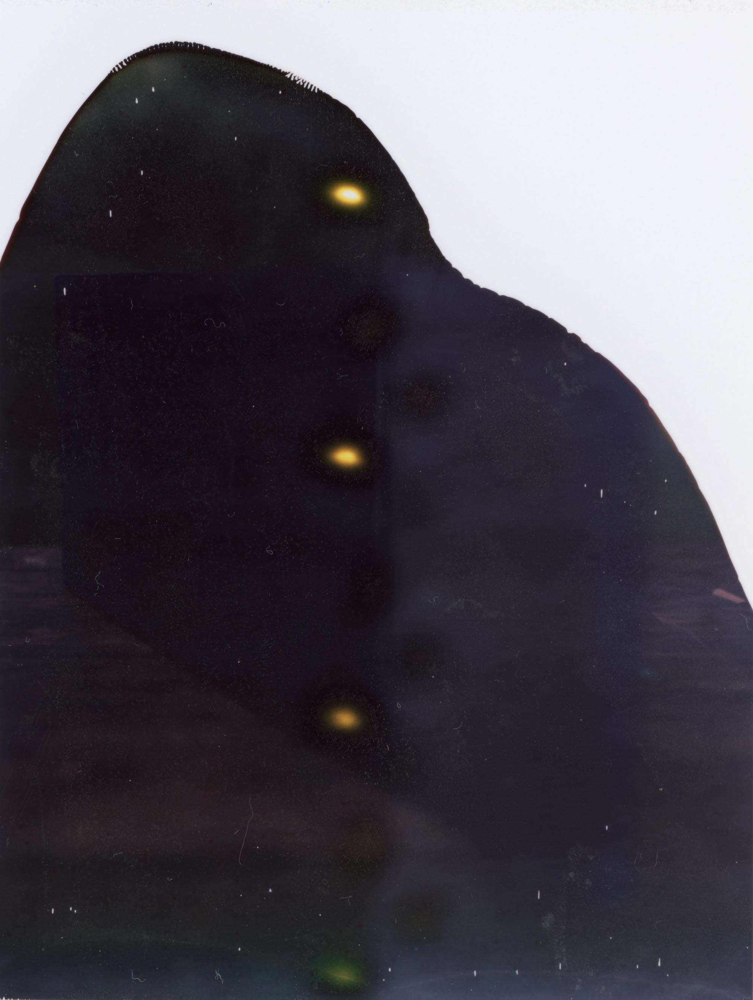
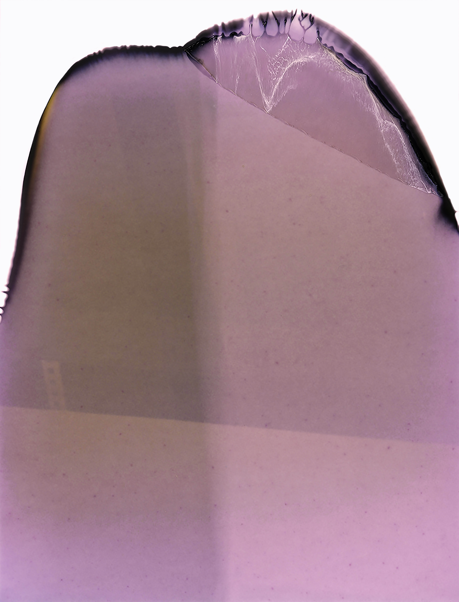
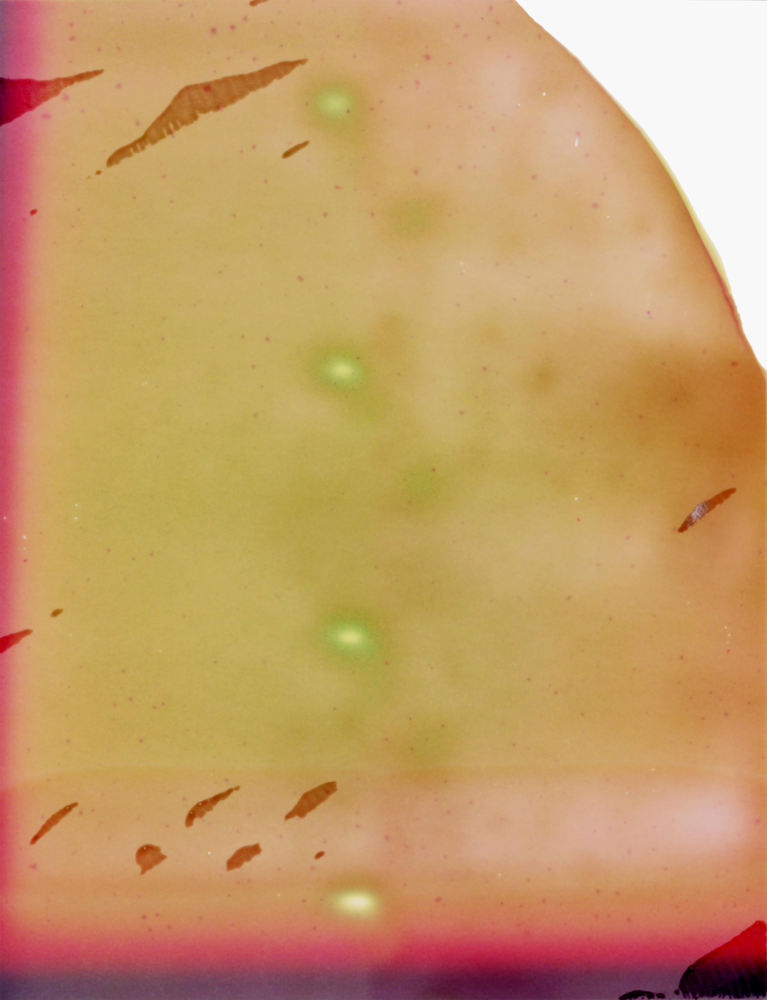
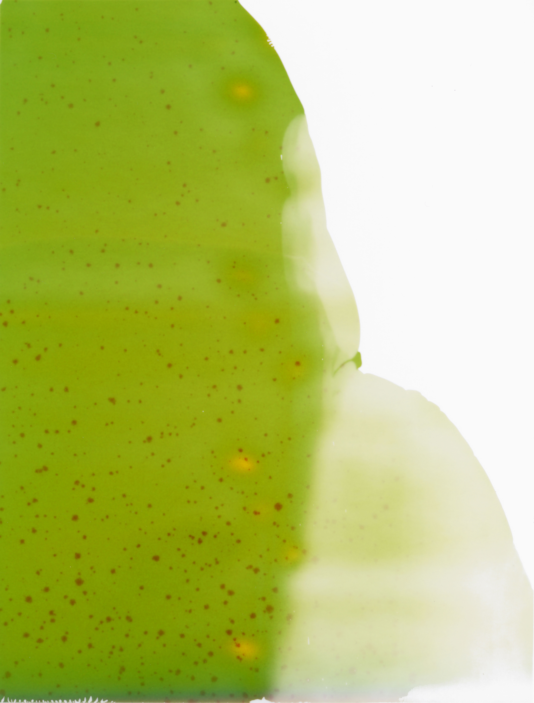
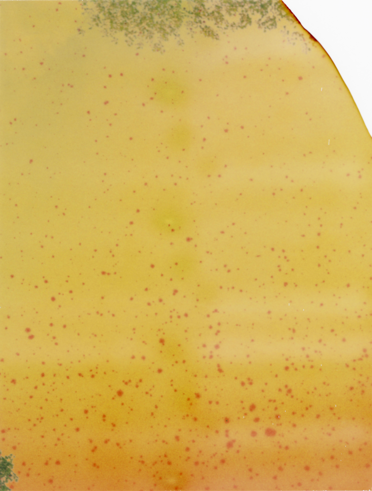
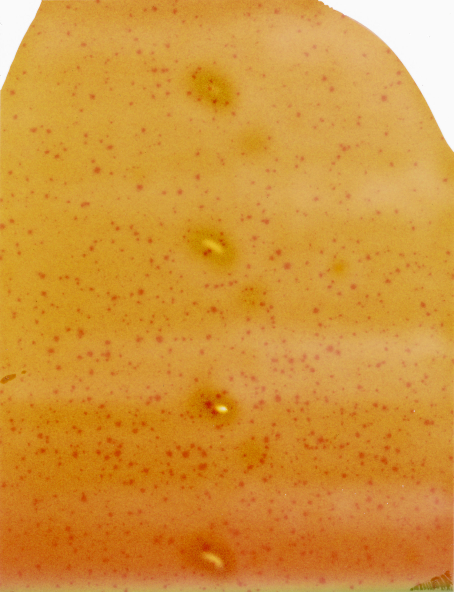

Form is an photographic exercise that relies on failure to become sucessful. It is also a reflection on the potential of transforming, and the limits of a photographic material.
These images were shot on expired instant Fuji FP-100. This kind of film is no longer being produced. The images, originally 3"x4" were scanned and enlarged to highlight the organic content that emerged from them.